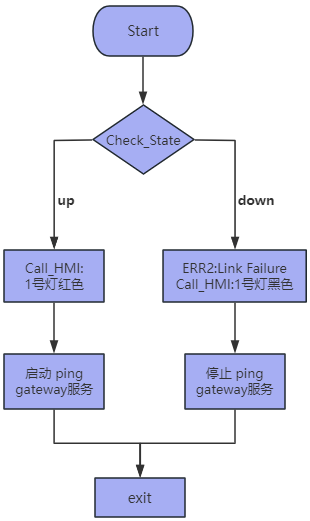

1. 概述
偵測以太網接口的連接狀態，包括link failure和connection loss
2. 偵測內容
2.1 Link failure 監測
- 定義：ethernet cable是否插入
- 監測原理：通過ifplugd監控carrier狀態
- 監測路徑：/sys/class/net/
/carrier - 狀態值：0：未連接，1：已連接
2.2 Connection loss 監測
- 定義：網絡層連接狀態
- 監測內容：
- 1.ip地址分配
- 2.默認 gateway 分配
- 3.gateway連通性
- 觸發條件：在Link 狀態為up時進行檢測
3. 流程圖
(<link_failure and connection_loss.png>)](%E6%80%BB%E4%BD%93%E8%AE%BE%E8%AE%A1.png)
4.實現方案
4.1.配置ifplugd，指定監測的網絡接口以及狀態改變時執行的腳本(詳細配置這裡暫不寫出)
腳本內容如下：包含link failure和connection loss兩種情況
#!/bin/sh
ETH="$1"
STATE="$2"
LOG_PATH="/var/log/ifplugd.log"
start_polling_script() {
echo "Started gateway ping script for interface $ETH" >> $LOG_PATH
sudo systemctl start gateway_ping.service
}
stop_polling_script() {
sudo systemctl stop gateway_ping.service
echo "Stopped gateway ping script for interface $ETH" >> $LOG_PATH
}
if [ "$STATE" = "up" ]; then
echo "$(date '+%Y-%m-%d %H:%M:%S') - $ETH : carrier = $(cat /sys/class/net/${ETH}/carrier)" | sudo tee -a $LOG_PATH
start_polling_script
elif [ "$STATE" = "down" ]; then
echo "$(date '+%Y-%m-%d %H:%M:%S') - $ETH : carrier = $(cat /sys/class/net/${ETH}/carrier)" | sudo tee -a $LOG_PATH
stop_polling_script
else
echo "$(date '+%Y-%m-%d %H:%M:%S') - Unknown state: $STATE" | sudo tee -a $LOG_PATH
fi
4.2 處理邏輯
1. 腳本接收到ifplugd的狀態改變訊號，並且執行對應的腳本
2. Link Failure 檢測：
if [ "$STATE" = "up" ]; then
# 記錄carrier狀態（eth cable 插入）
echo "$(date '+%Y-%m-%d %H:%M:%S') - $ETH : carrier = $(cat /sys/class/net/${ETH}/carrier)"
# ... 繼續Connection loss檢測
elif [ "$STATE" = "down" ]; then
# 記錄carrier狀態（ethernet cable斷開）
echo "$(date '+%Y-%m-%d %H:%M:%S') - $ETH : carrier = $(cat /sys/class/net/${ETH}/carrier)"
# 停止网关检测服务
stop_polling_script
4.3 腳本執行流程圖

4.4 gateway_ping.service
gateway_ping.service負責執行ping gateway的腳本，並檢測連通性，連通性失敗則寫入日誌通知
#!/bin/bash
INTERFACE=$1
LOG_FILE="/var/log/gateway_ping.log"
log_message() {
echo "$(date '+%Y-%m-%d %H:%M:%S') - $1" >> "$LOG_FILE"
}
while true; do
GATEWAY=$(ip route show default | awk '{print $3}')
if ping -c 1 "$GATEWAY" &> /dev/null; then
log_message "Gateway $GATEWAY is reachable from interface $INTERFACE"
else
log_message "Gateway $GATEWAY is NOT reachable from interface $INTERFACE"
fi
sleep 30
done
4.5 ping gateway腳本執行流程圖
(pinggateway1.png)](ping%20gateway(1).png)
5. 測試結果
5.1 ethernet cable插入和拔出

5.2 關閉DHCP Server，ethernet cable插入

6. ifplugd配置流程
6.1 安裝ifplugd
- sudo apt-get install ifplugd
6.2 配置ifplugd
編輯配置文件：/etc/default/ifplugd
# 監控的接口，可以是具體接口名或 auto
INTERFACES="enp3s0"
# 或者監控所有接口
# INTERFACES="auto"
# ifplugd 參數
ARGS="-q -f -u0 -d0 -w -I -r /etc/network/if.sh"
6.3 創建if.sh腳本
sudo nano /etc/network/if.sh
#!/bin/sh
ETH="$1"
STATE="$2"
LOG_PATH="/var/log/ifplugd.log"
start_polling_script() {
echo "Started gateway ping script for interface $ETH" >> $LOG_PATH
sudo systemctl start gateway_ping.service
}
stop_polling_script() {
sudo systemctl stop gateway_ping.service
echo "Stopped gateway ping script for interface $ETH" >> $LOG_PATH
}
if [ "$STATE" = "up" ]; then
echo "$(date '+%Y-%m-%d %H:%M:%S') - $ETH : carrier = $(cat /sys/class/net/${ETH}/carrier)" | sudo tee -a $LOG_PATH
start_polling_script
elif [ "$STATE" = "down" ]; then
echo "$(date '+%Y-%m-%d %H:%M:%S') - $ETH : carrier = $(cat /sys/class/net/${ETH}/carrier)" | sudo tee -a $LOG_PATH
stop_polling_script
else
echo "$(date '+%Y-%m-%d %H:%M:%S') - Unknown state: $STATE" | sudo tee -a $LOG_PATH
fi
6.4 設置權限
sudo chmod +x /etc/network/if.sh
- 創建日誌文件
- sudo touch /var/log/ifplugd.log
- sudo chmod 666 /var/log/ifplugd.log
6.5 啟用ifplugd
-
启用 ifplugd 服务
- sudo systemctl enable ifplugd.service
-
启动服务
- sudo systemctl start ifplugd.service